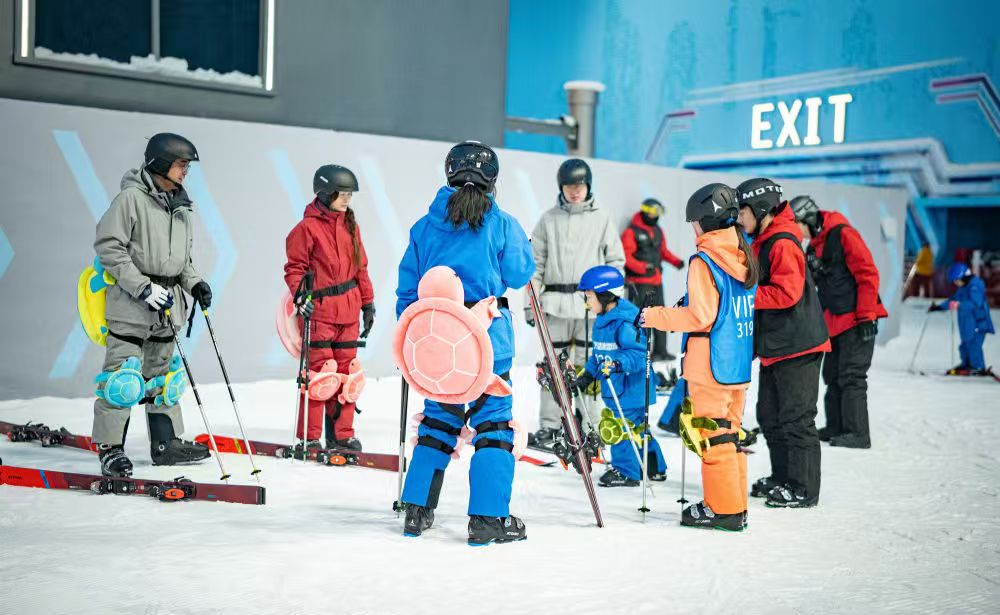
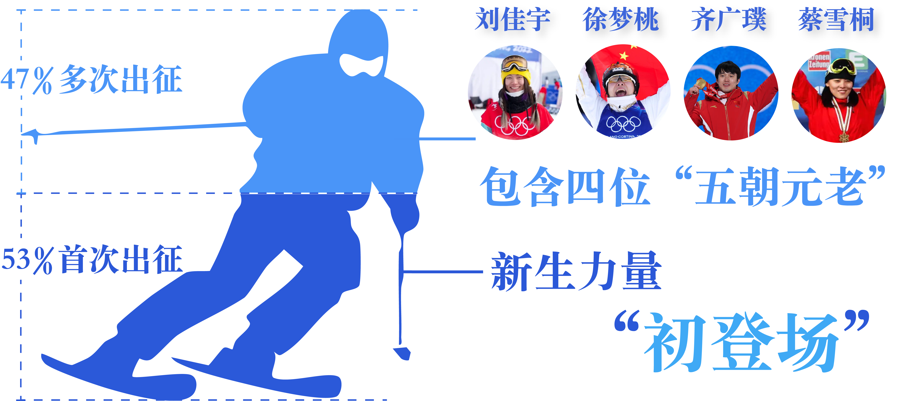

2026 年米兰 - 科尔蒂纳丹佩佐冬奥会落下帷幕，中国冬奥军团以兼具厚度与亮点的表现，完成了一次 “竞技实力检验 + 产业潜力释放” 的双重答卷。从数十年跨越的历史跃升，到参赛阵容的结构化支撑，再到本届赛场的精准突破，每一组数据都在勾勒中国冰雪运动的发展轨迹，更预示着冰雪产业的广阔未来。
一、历史脉络：堆叠图曲线里的 “跨越式成长”
中国冰雪运动的崛起，早已刻在清晰的历史数据曲线中。翻开中国冬奥参赛历史获奖情况，一条 “从无到有、从弱到强” 的增长轨迹跃然纸上。
1980 年首次踏上冬奥赛场时，中国代表团仅实现 “参赛零的突破”；2002 年盐湖城冬奥会，杨扬斩获短道速滑金牌，实现中国冬奥金牌 “零的突破”；2022 年北京冬奥会，中国代表团以 9 金 4 银 2 铜的战绩创下历史最佳；本届米兰冬奥会，中国军团创下了中国在境外冬奥会的最好成绩。
这条持续攀升的曲线，绝非偶然。背后是国家冰雪运动发展规划的长期落地，是训练体系、科技助力、人才培养等多维度的持续投入，更印证了中国冰雪竞技水平已从 “单点突破” 迈向 “全面开花”，正式跻身世界冰雪运动第一梯队。而历史数据的积累，也为今后的赛场表现奠定了坚实基础。
二、参赛阵容：数据勾勒的 “传承与新生”
竞技成绩的稳步提升，离不开参赛阵容的科学布局与结构化支撑。作为本届冬奥表现的 “人才基石”，中国代表团的阵容数据呈现出鲜明的发展逻辑：共派出 126 名运动员，覆盖 7个大项，其中女运动员 68 人（占比达 54%）、男运动员 58 人（占比达 46%），印证了中国冰雪运动 “男女均衡发展” 的良性格局。
从参赛运动员流向图可见，参赛人力配置与历史优势项目高度契合：自由式滑雪以 23人成为参赛人数最多的项目，单板滑雪（17 人）、速度滑冰（15 人）紧随其后，三大项目参赛人数合计占总人数的 43.7%，形成 “优势项目集中发力、潜力项目逐步补齐” 的布局。
年龄金字塔图清晰对比了不同年龄的男女运动员数量，而年龄结构图则清晰展现了 “新老交替、以老带新” 的健康生态：30岁以下的选手成为队伍的重要力量，其中 20-25 岁年龄段运动员成为队伍的中坚力量。

2026年米兰奥运会，53% 的运动员为冬奥 “新人”，新鲜血液的大量注入带来了技术创新与竞技活力；与此同时，刘佳宇、徐梦桃、齐广璞、蔡雪桐四位 “五朝元老” 坚守赛场，以超过 15 年的运动生涯为年轻队员提供大赛经验与心理支撑。这种合理的新老配比，既保障了当下的竞技竞争力，更筑牢了未来 10 年的人才储备根基。
三、2022vs2026 战绩：“突破与延续”
回顾 2022 北京冬奥会，中国队以 9 金 4 银 2 铜创下历史最佳。当时形成了 “雪上项目强势崛起、冰上项目稳固输出” 的均衡态势。其中，自由式滑雪空中技巧、短道速滑混合团体等项目的 “集团优势” 初步显现，为后续发展奠定了项目基础。值得注意的是，中国选手闫文港味中国钢架雪车队获得的首枚冬奥会奖牌（铜牌）。
漫长岁月沉淀的底蕴底蕴，加上完整且强劲的阵容深度作为坚实支撑，层层蓄力、厚积薄发，最终切实转化为米兰在各项赛事中的优异战绩。
中国代表团的奖牌呈现“优势深化”的鲜明格局：自由式滑雪强势领跑，斩获 3金 3银 3铜，贡献了总金牌数的 60%，展现出世界水平；滑冰大项斩获 1金 1 银 2 铜；单板滑雪由苏翊鸣收获1金1铜，个人统治力与项目发展潜力同步凸显。
北京冬奥会圆满落幕后，国内冰雪运动及冰雪产业迎来了质的飞跃与里程碑式的突破。曾经“三亿人上冰雪”的美好愿景如今已落地成真，冰雪资源所代表的“冷”正加速转化为拉动经济的“热”。
而随着第25届冬奥会在意大利米兰圆满落幕，比赛的精彩程度和中国冰雪健儿的出色表现更是让无数观众心潮澎湃，进一步为中国冰雪产业带来了新的机遇。冰雪经济正借助奥运东风，实现全国范围内的规模扩张与品质升级，书写着冬季经济的新篇章。
四、十年翻三倍：冰雪产业规模突破万亿大关
正如中国冬奥金牌从“零的突破”到9金的跨越，中国冰雪产业也走出了同样的跃升曲线。国际冬季运动博览会主论坛上发布的《中国冰雪产业发展研究报告（2025）》显示，去年我国冰雪产业规模已突破万亿元大关，达10053亿元。
相较于2015年申奥成功时的2700亿，短短十年时间，全国冰雪产业规模翻了近三倍。这表明，中国冰雪产业正处于快速发展阶段，展现出市场规模持续扩大、消费者需求日益多样化、产业链条更加完善的发展势态。
五、冰雪旅游持续升温，本雪季有望接待3.6亿人次
在产业整体向好的大背景下，作为核心业态之一的冰雪旅游表现尤为亮眼。中国旅游研究院（文化和旅游部数据中心）发布的《中国冰雪旅游发展报告（2026）》显示，截至2025年12月，全国新增冰雪旅游相关企业约1423家，从事冰雪旅游的相关企业累计达1.4万余家，同比增长11%。
在刚刚结束的2025年12月至2026年2月这一冰雪季中，我国预计接待冰雪旅游游客约3.6亿人次，相关旅游收入有望达到4500亿元。其中，以冰雪观光或冰雪体验为主要出行目的的游客约为2.2亿人次。总体来看，我国大众冰雪旅游的人次与收入均呈上升趋势，已步入持续繁荣的新阶段。
六、全国滑雪场布局加快，室内外齐发力，“四季滑雪”成趋势


滑雪作为冰雪产业的核心体验项目，正如同自由式滑雪、短道速滑等优势项目一样，成为中国冰雪的“长板”。滑雪作为冰雪产业的核心体验项目，是拉动冰雪旅游消费快速增长，成为了区域冰雪旅游收入的核心动力。
目前我国室外滑雪场主要集中于华北、东北及西北地区，这三大区域凭借天然的气候与地理优势，成为室外滑雪场的核心分布带。华北五省区市滑雪场总数达240个，其中排在第一位的是河北省，滑雪场数量达84个。东北三省与新疆合计276个。上述两个区域合计516个滑雪场，占全国滑雪场总数近六成。
这些地区以室外真雪场为主导，在冰雪运动场地建设方面处于全国领先水平。不仅数量可观，这些滑雪场整体设施较为先进，赛事活动频繁，为滑雪爱好者提供了良好的运动体验。
此外，无论是全国滑雪人次和还是室内滑雪场的修建都呈增长趋势。中国作为全世界室内滑雪场最多的国家，这一基础设施优势为滑雪人口的持续扩大提供了坚实支撑。如图所示，国内室内滑雪场数量与滑雪人次呈现出明显的同步增长态势。
在2024-2025雪季，全国室内滑雪场数量已达到66家，共吸引滑雪人次563万，双双创下历史新高。显示出室内滑雪场作为四季运营的冰雪休闲载体，正受到越来越多消费者的青睐。
随着雪场布局不断向南方及非传统冰雪地区延伸，更多群众能够突破季节与地域限制，全年畅享滑雪乐趣。室内滑雪场不仅降低了大众参与冰雪运动的门槛，也成为“南客北滑”“四季滑雪”常态化的重要推动力。
七、年轻群体成滑雪增长主力，冰雪热情正在代际传递
赛场上，年轻运动员争金夺银的精彩表现点燃了公众对冰雪运动的热情；赛场外，这份热情正转化为实实在在的消费动力。
大众冰雪消费市场研究报告（2024—2025 冰雪季）显示，2024—2025 冰雪季消费客群中，青壮年客群（25-34岁）人数占比超过半数，达 55.81%；更为值得关注的是，年轻客群（16-24岁）占比为 14.65%，其客群规模同比提升幅度高居各年龄段之首，达 31.80%。
这些充满活力的年轻力量，正如赛场上那53%的冬奥“新人”一样，为冰雪事业注入了源源不断的新鲜血液，推动着中国冰雪朝着更年轻、更普及、更具活力的方向持续发展。